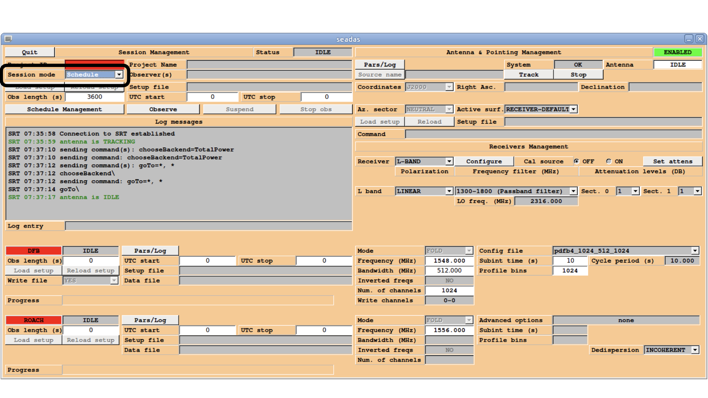
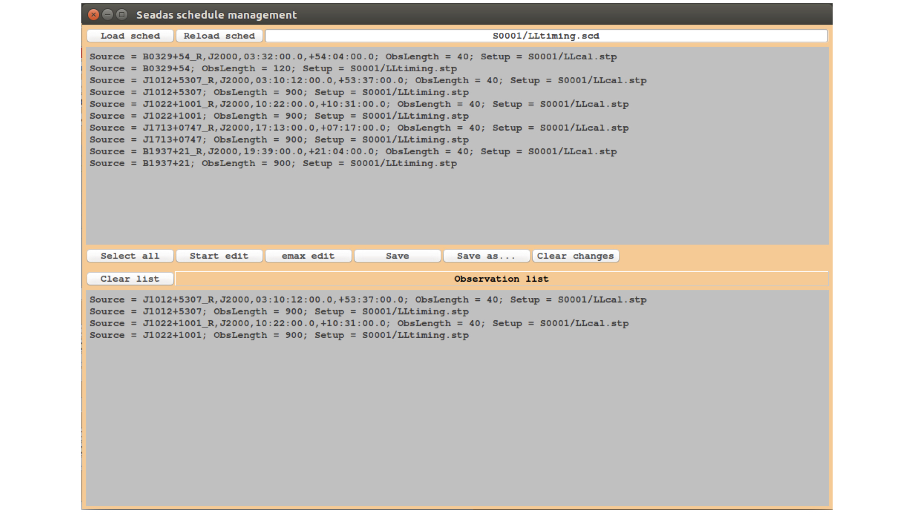

Fig.2 The ACS monitor shows the state of the containers related to each DISCOS component.
The state of each container can be verified in the section highlighted in blue.
The blue arrow indicates the number of containers (35 when the system is ready).
Fig.3 In the Common settings panel of the ACS monitor, the remote and the usenativessh items must be selected as indicated by the green arrows. The Start and the globalgreentriangle buttons highlighted in green must be used to restart the Acs suite and the Containers, respectively. The Kill button highlighted in red must be used to close the ACS panel during the Shutdown of Discos.
Fig.10 Discos-console is the machine where you run the system and where
you should find the input terminal and all the monitors. It is also
the destination for your schedules.
Fig.11 In the input console the users can write Nuraghe commands. The prompt is just a sequential number enclosed in <>.
If a command is properly read, the system replies by repeating the command itself, followed by the operation results
(if they are foreseen).
Fig.12 The AntennaBoss monitor shows the target info, indicating the commanded and actual positions pointed by
the antenna. It also gives a feedback on the pointing
accuracy and on the overall antenna status.
Fig.15 Observers need to focus only on the Mount status (indicated by the green box) and on the actual position of the axis expressed in Azimuth and Elevation (shown in blue), compared to the commanded positions (actual positions with the label “Cmd Az.” and “Cmd El.”).
Fig.16 The Mount monitor after the park of the antenna by using >antennaPark
Fig.18 The ReceiverBoss monitor summarizes the frontend setup parameters.
The bottom part is devoted to the derotator (dewar positioner), when available.
Fig.19 The ReceiverBoss monitor in the L-band configuration.
Fig.23 The MinorServo monitor shows the current setup code and the minor-servo status and movement. In this case the image refers to the C-band configuration.
Fig.27 In the Calibration tool client window the subscan
currently being acquired is shown in real-time (upper
plot), even if in a low-resoltution. In the lower plot, the
last completed subscan - in its full sampling - is
shown. We can read the information about the pointing
of focus offsets (“peakoffsets”), the beam size (“HPBW”), etc.
Fig.28 Calibration tool client window related to a focus subscan.
Fig.31 Seadas GUI. On the top right, the red box signals that the control of the antenna is DISABLED.
Fig.32 Seadas GUI. On the top right, the green box signals that the control of the antenna is now ENABLED.

Fig.33 Seadas GUI. On the top left, circled in black, the Session Mode combo box where the option Schedule needs to be selected in order to start the observations through your pre-prepared schedule.
Fig.34 Seadas GUI. Pop-up window where the schedule can be uploaded by clicking on the button Load sched.

Fig.35 Seadas GUI pop-up window for schedule management. The uploaded schedule lines will appear on the top panel. The ones selected for observations will appear in the bottom panel.


{kind=link}
{kind=link}


{kind=link}
{kind=link}